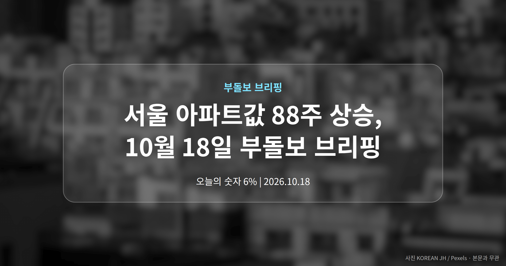
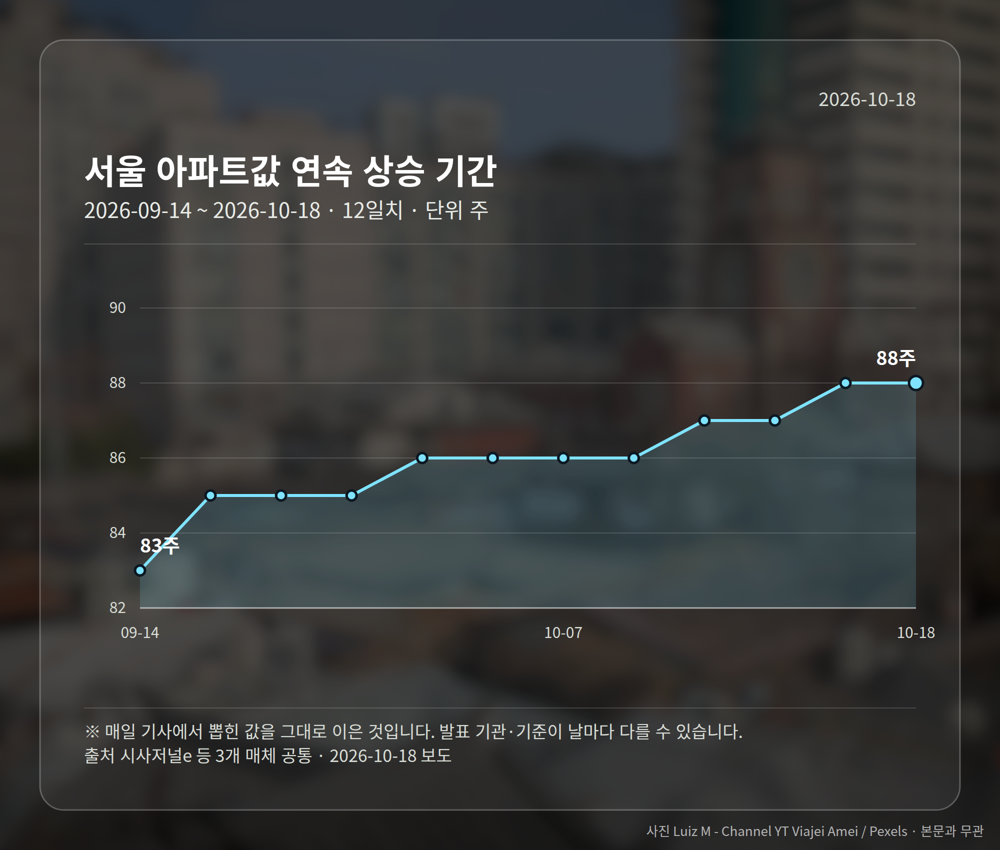
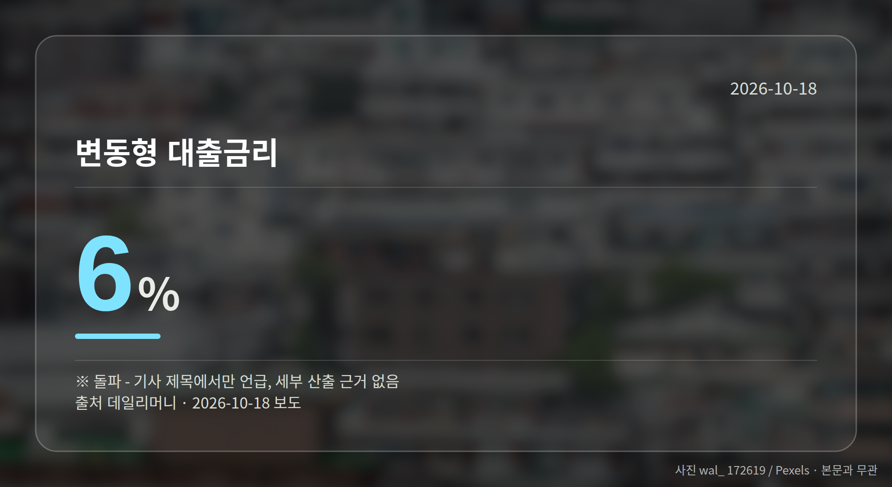
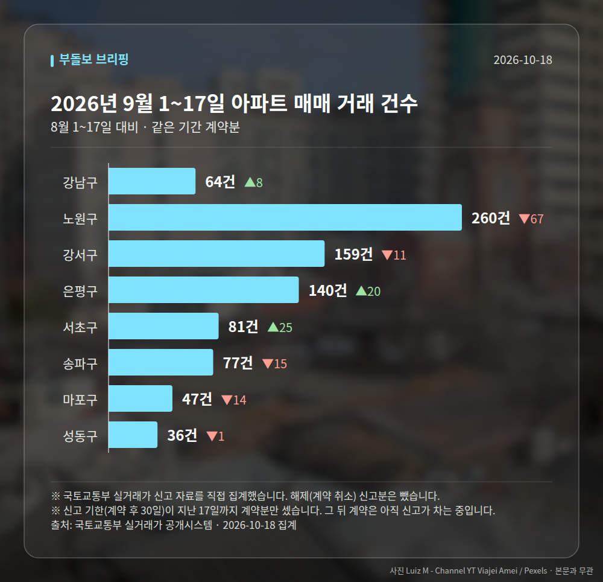

이 글은 2026년 10월 18일 기준으로 정리한 내용입니다. 실거래 거래 건수는 2026년 9월 1~17일 계약분(신고 기한이 지난 것), 전세가율 등은 2026년 8월 신고분입니다.
서울 아파트값 88주 상승 소식이 오늘도 복수 매체를 통해 전해졌습니다. 다만 같은 서울 안에서도 강남3구는 하락, 외곽은 강세라는 엇갈린 흐름이 함께 보도됐습니다.
여기에 한국은행의 11월 금리 인상론이 겹쳐, 가격보다 대출 조건을 먼저 점검해야 할 국면으로 보입니다.

위키트리, 펜앤마이크, 시사저널e 세 매체가 공통으로 서울 아파트값이 88주 연속 상승했다고 보도했습니다. 이 기간이 오늘의 핵심 숫자입니다.
| 항목 | 내용 | 출처 |
|---|---|---|
| 연속 상승 기간 | 88주 | 시사저널e 등 3개 매체 |
| 지역별 흐름 | 강남3구 하락, 외곽 강세 | 시사저널e |
주의할 점이 있습니다. 구체적인 주간 상승률이나 강남3구의 하락폭 같은 세부 수치는 제목 수준에서만 전해졌고, 본문 근거는 확인되지 않았습니다.
또 야권에서 "현실을 외면한다"는 비판이 제기됐다는 보도(펜앤마이크), 정부 대응을 '정신승리'로 표현한 보도(위키트리)가 함께 나왔습니다. 정치적 논조가 섞인 기사들이라 사실과 평가를 구분해 읽으실 필요가 있습니다.
데일리머니는 한국은행의 11월 금리 인상론이 점화되고 있다고 보도했습니다. 같은 보도에 변동형 대출금리(시장금리에 따라 주기적으로 이자율이 바뀌는 대출)가 6%를 돌파했다는 내용이 제목에 포함됐습니다.

이 수치 역시 제목에서만 언급됐고 산출 근거는 제공되지 않았습니다. 사실로 확인된다면 이른바 '영끌족'의 이자 부담이 커질 수 있다는 지적이 나오는 대목입니다.
더해서 대출 규제가 전·월세 가격 상승으로 옮겨가는 악순환이 지적됐습니다. 집을 사려는 분뿐 아니라 무주택 임차 가구에도 닿는 이야기라, 서울 아파트값 88주 상승 흐름과 묶어서 볼 필요가 있습니다.
연합뉴스 한민족센터는 올해 서울 일반분양 물량이 작년 대비 3배에 육박한다고 보도했습니다. 이른바 '청약 대어' 단지들이 줄지어 공급된다는 내용입니다.
다만 세대수나 비교 기준 시점이 제시되지 않아, 늘어난 물량이 가격 안정으로 이어질지는 추가 확인이 필요합니다.
내일 이후로는 한국은행의 11월 금리 결정 여부와 다음 주 청약 일정 두 가지가 확인 지점입니다.
서울 8개 구에서 계약된 매매는 864건입니다. 8월 1~17일 919건과 견주면 -55건입니다.
거래가 많은 곳: 강남구 64건(+8) · 노원구 260건(-67) · 강서구 159건(-11)
신고 기한(계약 후 30일)이 지난 17일까지 계약분끼리 견줬습니다.
강남구 전세가율(전세 보증금 ÷ 매매가)은 가운뎃값 36.5%입니다. 같은 단지·같은 면적 29곳을 견줬습니다.
서울 25개 구 가운데 거래가 가장 크게 움직인 곳: 서초구 +44.6%(56→81건, 서초동에 48.1% 몰림) · 강동구 -34.7%(118→77건)
2026년 9~10월 계약 신고가

→ 그림 파일 img-stats-volume.png 을 이 자리에 올리세요
국토교통부 실거래가 신고 자료를 직접 집계했습니다. 해제(계약 취소) 신고분은 뺐습니다.
여러분이 보고 계신 지역은 강남3구 쪽 흐름에 가까운가요, 외곽 쪽 흐름에 가까운가요?
댓글로 알려 주시면 다음 글에 반영하겠습니다.